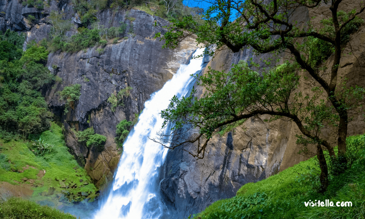
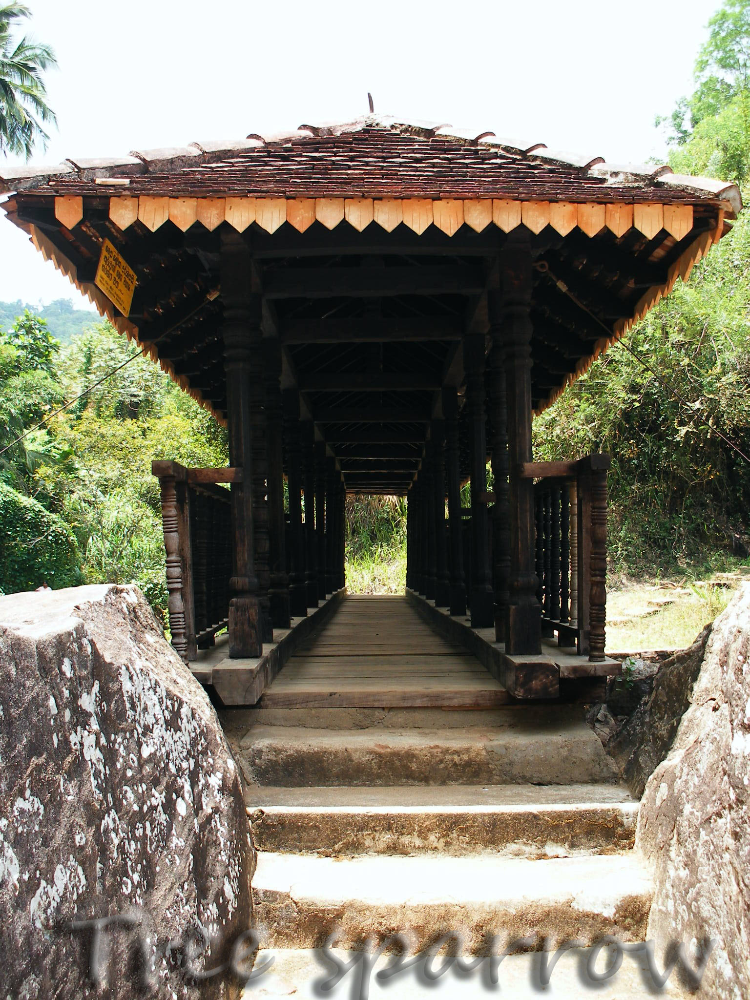
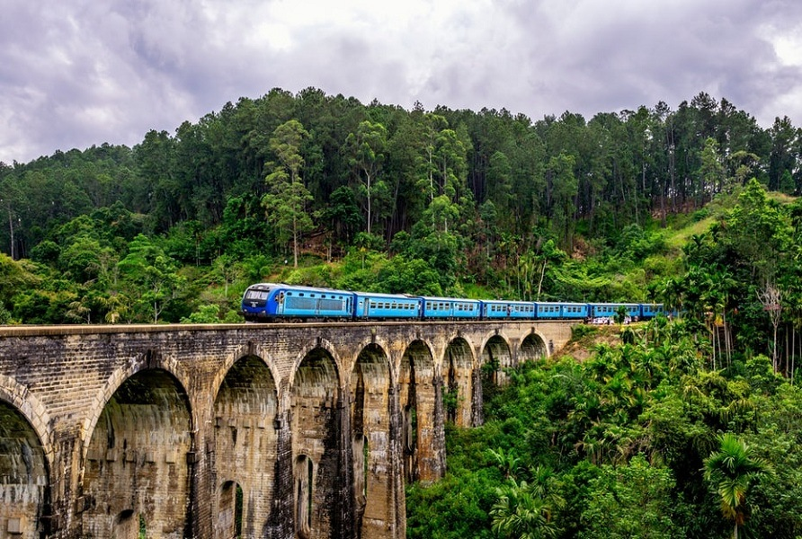
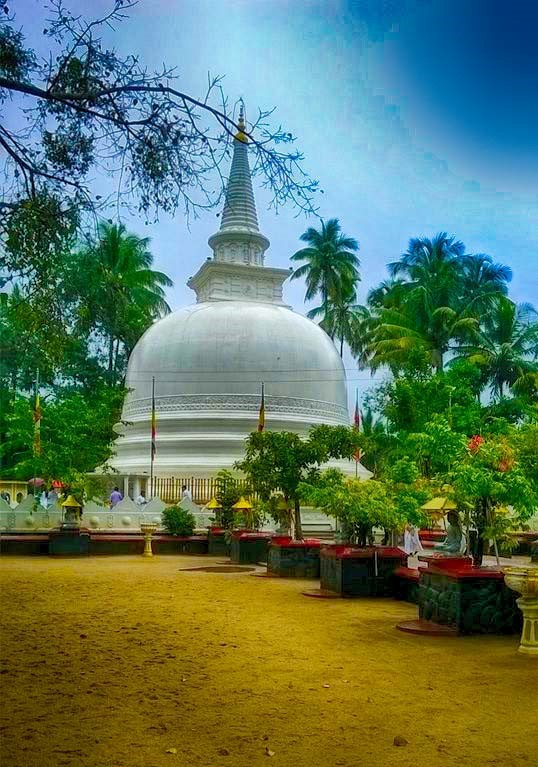
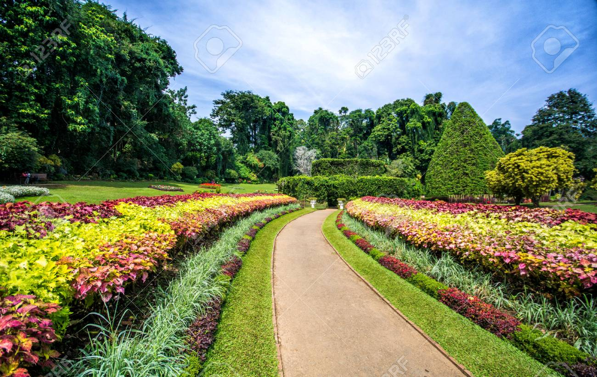
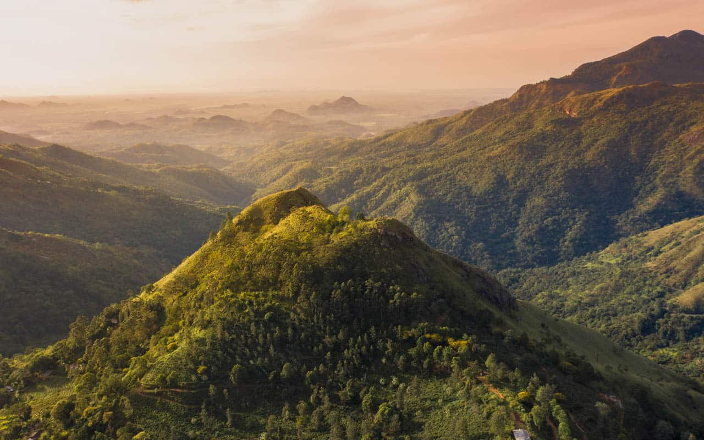

Welcome To The
" MOUNTAINS..."
Uva Province (Sinhala: ඌව පළාත ) is Sri Lanka's second least
populated province, with 1,259,880 people, created in 1896. It consists of two districts: Badulla and Moneragala.
The provincial capital is Badulla. Uva is bordered by Eastern, Southern, Sabaragamuwa and Central provinces.
Its major tourist attractions are Dunhinda falls, Diyaluma Falls, Rawana Falls, the Yala National Park
(lying partly in the Southern and Eastern Provinces) and Gal Oya National Park (lying partly in the Eastern Province)
. The Gal Oya hills and the Central mountains are the main uplands, while the Mahaweli (Sinhalese: great-sandy)
and Menik (Sinhalese: gemstone) rivers and the huge Senanayake Samudraya and Maduru Oya Reservoirs are
the major waterways.
Places to visit in UVA

Dunhinda Falls
Dunhinda Falls is a waterfall located about 5 kilometres (3.1 mi) from Badulla in the lower
central hills of Sri Lanka. The waterfalls are purported to be one of the country's most
beautiful waterfalls.[citation needed]The waterfall, which is 64 metres (210 ft) high, gets
its name from the smoky dew drops spray, (Dun in sinhala means mist or smoke) which surrounds
the area at the foot of the waterfall. It's also known as bridal fall, as the shape
of the water falling is similar to a bridal veil.
Click here
to find out more.

The Bogoda bridge
The Bogoda bridge is over 400 years old and made entirely from wooden planks, which are said to have
come from one tree.[citation needed] It is an exclusive construction as it has an 2.4 metres
(7.9 ft) tall tiled roof structure for its entire span of nearly 15 metres (49 ft) length with a 1.5
metres (4.9 ft) breadth. Wooden fences of the bridge are decorated in various ancient designs
and have been erected on either sides.The structure of the bridge is standing on a huge tree
trunk 11 metres (36 ft) in height. Jack fruit (Artocarpus heterophyllus) logs and Kumbuk (Terminalia arjuna)
logs were mainly used as the constructive material of the bridge. Furthermore, Kaluwara
(Diospyros ebenum) timber and Milla timber were used for the wooden decorations.
Click here
to find out more.

Nine Arch Bridge
The Nine Arch Bridge (Sinhala: ආරුක්කු නමයේ පාලම,) also called the Bridge in the Sky, is a viaduct bridge in Sri Lanka.
It is one of the best examples of colonial-era railway construction in the country. The construction
of the bridge is generally attributed to a local Ceylonese builder, P. K. Appuhami, in consultation with British
engineers. The chief designer and project manager of the 'upcountry railway line of Ceylon' project was D. J.
Wimalasurendra, a distinguished Ceylonese engineer and inventor. The designer of the viaduct was Harold Cuthbert
Marwood of Railway Construction Department of Ceylon Government Railway.
Click here
to find out more.

Muthiyangana Raja Maha Vihara
Click here
to find out more.

Hakgala Botanical Garden
Hakgala Botanical Garden is one of the five botanical gardens in Sri Lanka. The other four are Peradeniya
Botanical Garden, Henarathgoda Botanical Garden, Mirijjawila Botanical Garden and Seetawaka Botanical
Garden. It is the second largest botanical garden in Sri Lanka. The garden is contiguous to Hakgala
Strict Nature Reserve.
Click here
to find out more.
Horton Plains National Park
Horton Plains National Park (Sinhala: හෝර්ටන් තැන්න ජාතික උද්යානය Hortan Thanna Jathika Udyanaya) is
a national park in the central highlands of Sri Lanka that was designated in 1988. It is located at
an elevation of 2,100–2,300 m (6,900–7,500 ft) and encompasses montane grassland and cloud forest.
It is rich in biodiversity and many species found here are endemic to the region. It is also a popular
tourist destination and is situated 8 kilometres (5.0 mi) from Ohiya, 6 kilometres (3.7 mi) from the
world-famous Ohiya Gap/Dondra Watch and 32 kilometres (20 mi) from Nuwara Eliya..
Click here
to find out more.

Little Adam's Peak
Ella in Sri Lanka is a very well known worldwide for it’s breathtaking view and scenery, Little Adam’s Peak is just
one of it. The eye catching, jaw dropping and conspicuous peak is the one not to miss, Situated in Ella, Sri Lanka,
it has been attracting tourists for a long time now. The reason for its popularity is the amazing view that never
fails to attract and impress the visitors.
Click here
to find out more.